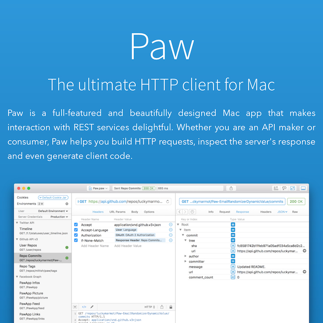
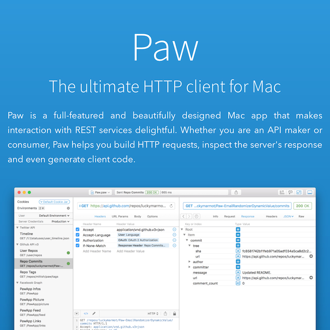

Paw - HTTP/REST Client

Dealing with REST APIs can be a funky process, but the folks at LuckyMarmot have made this gorgeous-looking, really intuitive client for breaking down those barriers.
- Prior: Papa Parse
- Next: FEZ OST

Dealing with REST APIs can be a funky process, but the folks at LuckyMarmot have made this gorgeous-looking, really intuitive client for breaking down those barriers.